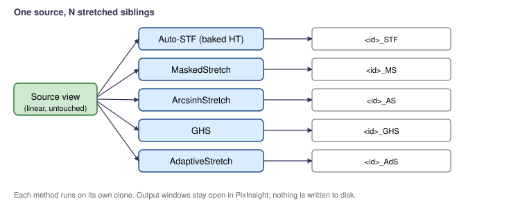

Scripts > EGo > Stretch Comparison
Applies every enabled non-linear stretch method to an independent clone of the target and leaves N output windows open for side-by-side comparison. The original is never modified.

| Method | Suffix | Notes |
|---|---|---|
| Auto-STF baked into HistogramTransformation | _STF |
The "always-on" baseline. Shadows clipping −2.80σ, target background 0.25, per-channel (un-linked). |
| MaskedStretch | _MS |
Iterative stretch with built-in highlight protection. Target background 0.125, 100 iterations. |
| ArcsinhStretch | _AS |
Preserves star color. Stretch factor 100. |
| GeneralizedHyperbolicStretch | _GHS |
The fine-control workhorse. Defaults aimed at a moderate initial stretch. |
| AdaptiveStretch | _AdS |
Distribution-aware automatic stretch. |
For each enabled method, the script clones the target and applies
the stretch to the clone. Output windows are named
<source><suffix> (e.g.
M51_stack_STF). They remain open in PixInsight and are
not saved to disk.
Per-method tuning constants live near the top of the script
(STF_SHADOWS_CLIPPING, STF_TARGET_BACKGROUND,
MS_TARGET_BG, AS_STRETCH, …). Edit
them to make a particular method's defaults match your house style.
Part of the EGo PixInsight script set. PCL License 2.0.